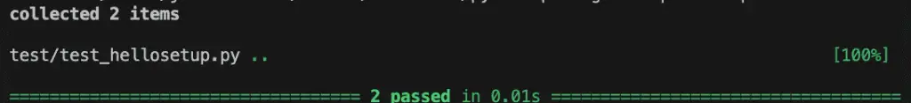
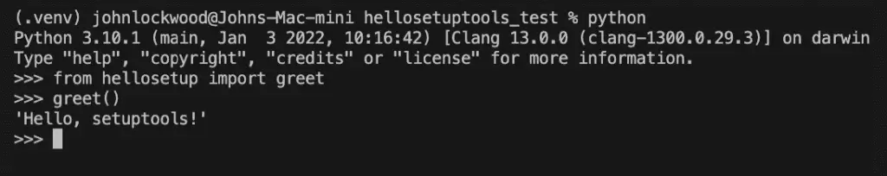
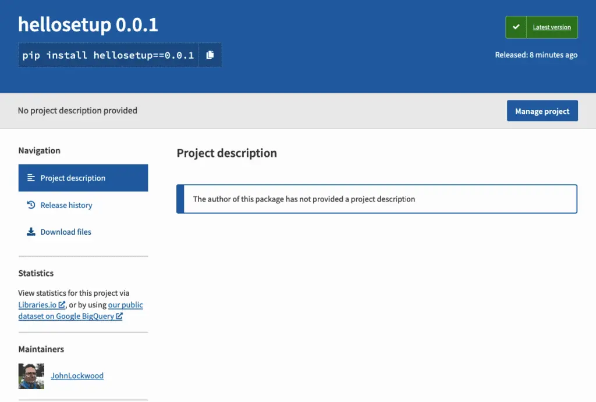
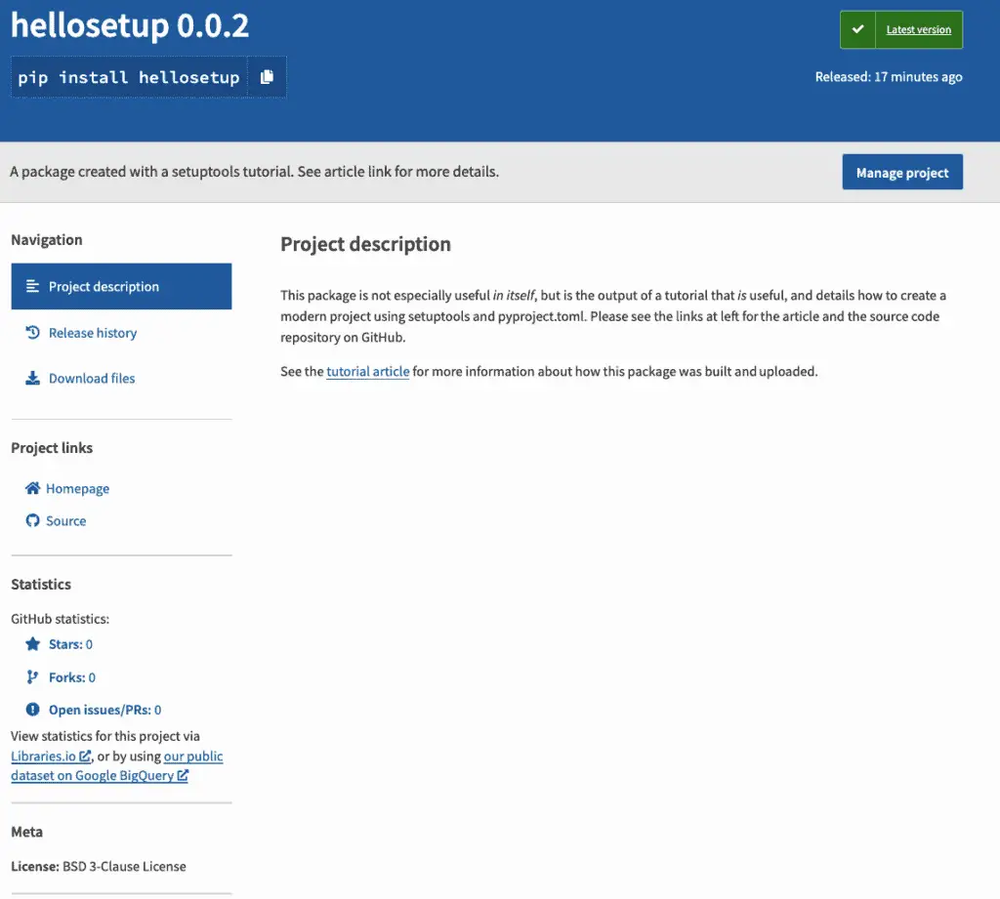

Python Package Example: Setuptools
Have you ever wondered about how to create a package like the ones you can install into your python environment using tools like pip or pipenv?
This article starts with the complete source code plus a how-to guide to publishing a minimal Python package to PyPi. The source is also available on GitHub. Once we have “Hello Setuptools” working, we create a new branch where we show how to add more features to a setuptools package.
Creating a Virtual Environment
As we normally do when we start a new Python project, we create and activate a virtual environment.
# On windows replace the second line with:
# .venv\Scripts\activate.bat
python3 -m venv .venv
source .venv/bin/activate
Pyproject.toml
At the root of our repository, we create a pyproject.toml file:
[build-system]
requires = ["setuptools", "wheel"]
build-backend = "setuptools.build_meta"
This is all this file needs to contain to get started, and basically tells the Python build system that we want to use setuptools as our build tool, and we also want to use setuptools as our build system. It also enables the use of wheel, which speeds up our build and the build of any dependencies we require. Our next steps will be to create a package to install and create a configuration file to give setuptools information about how to build our project.
Before moving on, let’s share a quick note about pyproject.toml. If you’re curious about the background of this, it’s actually a Python standard, defined in PEP 518. The idea of the that PEP and pyproject.toml file was to have a standard place for the Python build and packaging system to look to configure setuptools (which was already widely used), and many other Python package tools that were starting to come on the scene.
OK, that’s enough of the history channel – let’s create a package.
Creating the Package
Next, let’s create the package we’re going to install. We’ll call our package hellosetup. I realize that “hello_setuptools” would be a bit more clear, but since PEP 8 says that package names should be short and should avoid underscores, we’ll follow that advice. We begin by giving the package and the tests for the package a place to live.
# Create directories
mkdir src
mkdir src/hellosetup
mkdir test
OK, good, those names are pretty clear, but at this point hellosetup is not a package – it’s just a folder. Let’s fix that by creating an empty __init__.py:
echo > src/hellosetup/__init__.py
Let’s give our package something to do by creating a module in our package:
# src/hellosetup/module1.py
def get_article_url():
"""returns the article describing how to publish this package"""
return "https://codesolid.com/python-package-example-setuptools"
def greet():
"""Say hi to setuptools so as not to appear rude"""
return "Hello, setuptools!"
Adding Some Tests
Even though our project has very humble beginnings, we want to add some tests. That’s because here at “Hello Setuptools Industries”, quality is Job #1.
Making sure we’re in the shell with our virtual environment activated, we can simply type pip install pytest. We create a file in our editor and start typing…
# test/test_hellosetup.py
from hellosetup.module1 import get_article_url, greet
But wait a minute, this is ugly. We created a Python module with the name module1, which is maybe OK for a tutorial, but we don’t want the cool kids to know we have dumb module names. How can we fix this?
Fixing Package Names
Until our modules have sensible names, we can work around this a bit for now. Let’s open up our __init__.py file and add some imports to it.
# src/hellosetup/__init__.py
"""Import some key functions for now"""
from .module1 import get_article_url, greet
Now back in our test file, we see that we can change our import statement to read:
from hellosetup import get_article_url, greet
There, that’s much better.
Now we can finish our test file and run our tests.
# test/test_hellosetup.py
# Allow pytest to find the package root
import sys
sys.path.append("src")
from hellosetup import get_article_url, greet
def test_greet():
assert greet() == "Hello, setuptools!"
def test_get_article_url():
assert "codesolid.com" in get_article_url()
To run the tests, at the root of the project, simply type “pytest”:

Setuptools Configuration
In many established packages, you may find a file named “setup.py”. This is a file that used to be required for using setuptools, but more recently its use has been discouraged in favor of storing configuration in “setup.cfg”. With this in mind, let’s create a basic setup.cfg file in the root of our project to configure setuptools to be able to install our package.
[metadata]
name = hellosetup
version = 0.0.1
[options]
package_dir=
=src
packages=find:
[options.packages.find]
where=src
install_requires =
importlib; python_version >= "3.0"
IMPORTANT: You’ll want to give your project a new name that’s different from what I’ve used here to avoid conflicts, and you should adjust your other project files as well to make them consistent.
Building The Project
At this point, our project could actually be installed locally with Pip, as we outline in the next section. However, before doing that, we should make sure we’re ready not just to install locally, but that we’ve built our project to install correctly and quickly from pypi.org. To do this, with our virtual environment active, let’s install two new packages we’ll need.
pip install build
pip install twine
Next, we’ll run the build package as a module:
python -m build
This will build two files into the local “dist” directory. The first, the “.whl” file, is a binary distribution, which pip will try to install first if it can. Pip checks this first as an optimization to speed up the installation. The second file, the “tar.gz” file, is a source code distribution that pip will use if the binary distribution cannot be used.
Installing Our Setuptools Package With Pip
Our package has not yet been published to pypi.org at this point, so we can’t just use “pip install hellosetup” as we normally would. But fear not, we can still test it out locally, and we’ll do that now.
To do this, in the terminal, start at the root of your project. From there, the first thing we want to do if our virtual environment is active is type “deactivate” to deactivate it – alternatively, you could open a new terminal to avoid this step.
Next, let’s move to the parent of our project and create a new directory and a new virtual environment, for example:
cd ..
mkdir hellosetuptools_test
cd hellosetuptools_test
python3 -m venv .venv
source .venv/bin/activate
Now, let’s install our package and test it out. All we need to do for that is tell pip to install from the directory of our project, not from pypi.org. In my case, that project directory is at ../python-package-example-setuptools, so the command I want to use is:
pip install --use-feature=in-tree-build ../python-package-example-setuptools/
Since I saw it seemed to install the package just fine, I could go look around in the .venv/lib/python

We just used Pip to install our package. Pretty cool, right? Well, yes, of course it is (it was a rhetorical question, as we all know). But now let’s do something even cooler, and publish our package to pypi.org, so we can show it off to our friends and future mates. Don’t delete this test directory for now, though, as we’ll be using it again.
Creating an Account on Pypi.org
If you don’t already have a pypi.org account, creating one is very simple, and will cause you no trouble if you’ve ever created an online account anywhere. You register here. You’ll need to supply your name, email address, and a password – and make sure you store your password somewhere secure, of course. All done? Awesome, let’s go publish our package.
Publishing a Package to Pypi.org
In the terminal, let’s deactivate our test directory’s virtual environment by typing “deactivate” in the terminal. We’re going to use a tool called twine to do this. Note that there’s a test.pypi.org website to which you can publish first to test things out, but this involves creating a separate account. Since we’ve already built and tested locally, we can save some time at least for this tutorial by publishing to the actual index.
We start by installing Twine and checking it in the usual way:
source .venv/bin/activate
pip install twine
twine --version
Now we run the command to upload our package to pypi.org:
twine upload dist/*
This will prompt you for the username and password that you entered when you created your pypi.org account in the last section. When the upload is done, it’ll show you a link you can use to view your new package.
Here’s hellosetup version 0.0.1 looked for me:

Modifying the Setuptools Configuration
If you’ve followed along this far, congratulations! You’ve mastered the basics of creating a package, configuring setuptools and the Python build system using pyproject.toml and setup.cfg, building the package, and publishing it to pypi.org. So I wouldn’t blame you if you went to the fridge at this point and grabbed a beverage.
As for me, I’d like to make some improvements to our existing package. The package is there, and anytime you want, you can install it as you normally would with “pip install hellosetup”. But it’s far too minimal for a real project, so let’s do a few things to whip it into a nicer shape. Putting my project manager hat on for a minute, I hand myself the following requirements:
Our project should have a description that tells people what this is all about. Seeing text that reads, “The author of this project has not provided a description” is likely to make my users feel that I don’t love them, and of course I do.
The project should have a link to the repository on GitHub.
While I’m busy linking to things, it would be slick to also include a link to this article. It’s no secret to you, of course, but the whole point of the project was to have an example for the article.
We’ll need to bump the version number up from 0.0.1 to 0.0.2 because we’re publishing a new version.
The first step, before I bump up the version, is to tag the one I already have:
git tag 0.0.1
git push --tag
Next, we’ll edit our configuration. Because pyproject.toml simply points to the backend builder, setuptools, we won’t need to touch pyproject.toml. Here’s how the edited file should look:
[metadata]
name = hellosetup
version = 0.0.2
description = A package created with a setuptools tutorial. See article link for more details.
long_description = file: README.rst
long_description_content_type = text/x-rst
license = BSD 3-Clause License
url = https://codesolid.com/python-package-example-setuptools
project_urls=
Source=https://github.com/CodeSolid/python-package-example-setuptools
[options]
package_dir=
=src
packages=find:
[options.packages.find]
where=src
install_requires =
importlib; python_version >= "3.0"
As you can see, we’ve changed the version, added values for “url” (a single value) and project_urls (a dictionary). We’ve also added a description. For long_description, we had to create a new file, README.rst. As an aside, trying to give it a different name didn’t work, but we could have pointed to the original REAME.md by setting long_description_content_type = text/markdown. That file is here, if you’re curious.
The resulting hellosetup version 0.0.2 is looking a lot better:

Additional Resources
This article was created from several online resources that are worth consulting if you’re building a package that goes beyond trying out an online tutorial, or simply want to learn more.
The Guides and Tutorials on the Python Packaging User Guide site has a ton of great information that goes into significantly more depth than this article.
Of course, the setuptools documentation is also very much worth reviewing, especially the quickstart and the section on configuring setup() using setup.cfg.